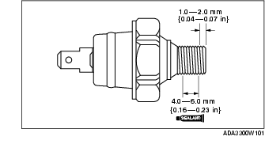

Oil pressure inspection [ZY]
- • Continuous exposure with USED engine oil has caused skin cancer in laboratory mice. Protect your skin by washing with soap and water immediately after this work.
- • Hot engines and engine oil can cause severe burns. Turn off the engine and wait until it and the engine oil have cooled.
1. Remove the oil pressure switch.
2. Screw the SST into the oil pressure switch installation hole.

3. Warm up the engine to normal operating temperature.
4. Run the engine at the specified speed, and note the gauge readings.
Oil pressure (reference value) [oil temperature: 100°C {212°F}]5. Stop the engine and wait until it is cool.
6. Remove the SST.
- • Be sure there is no sealant between 1.0-2.0 mm {0.04-0.07 in} from the end of the oil pressure switch to prevent a possible operation malfunction.
7. Apply silicone sealant to the oil pressure switch threads.

8. Install the oil pressure switch.
Tightening torque9. Start the engine and inspect for oil leakage.